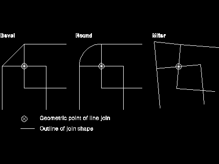

GpiSetLineJoin Parameter - lLineJoin
lLineJoin
(
LONG
) - input
Style of line join.

The possible values for this parameter are:
LINEJOIN_DEFAULT
Use default, same as LINEJOIN_BEVEL (unless changed with
GpiSetDefAttrs
)
LINEJOIN_BEVEL
Bevel
LINEJOIN_ROUND
Round
LINEJOIN_MITRE
Miter.
[Back: GpiSetLineJoin Parameter - hps]
[Next: GpiSetLineJoin Return Value - rc]